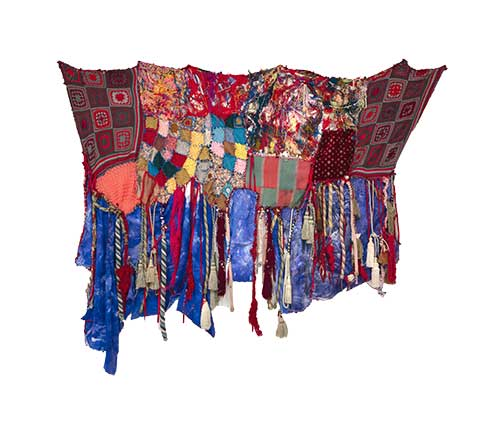
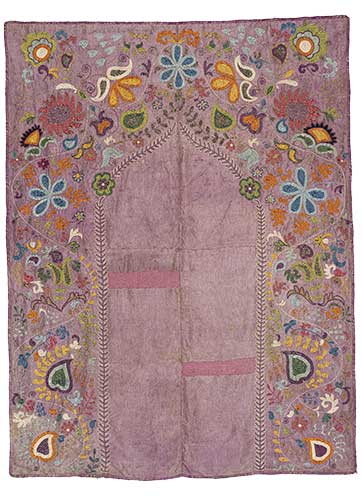
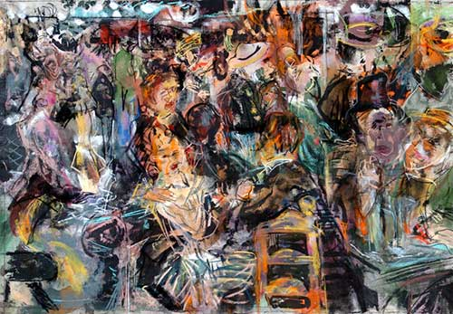
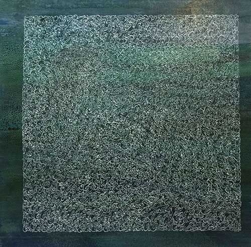
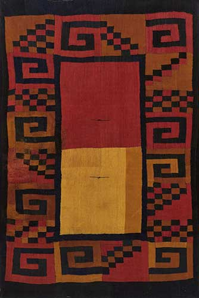
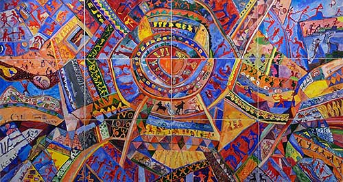
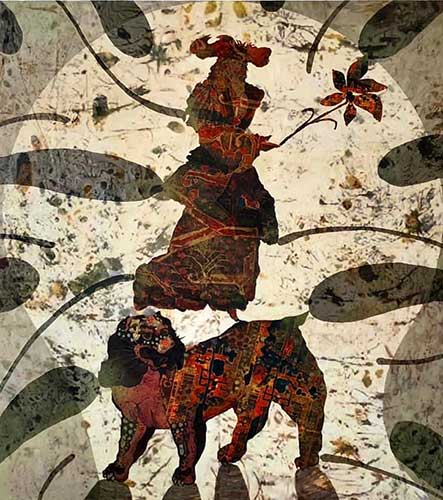

Feltöltési jelentés:
hab_osszeszove_B5_02.indd
Feltöltve: 2026 Mar 9., 19:51
Kis felbontású, de még használható képek:
HO74_01_02.tif ::: 263 dpi

8. pár Joynamoz suzani- Tadzsikisztán- Ura-Tyube vidéke_GÁspár_A.psd ::: 267 dpi

Kis felbontású, használhatatlan képek:
2. pár Sinkovics E_Re-Noir_Le Moulin de la Palette_89x110cm.jpg ::: 174 dpi

4. pár Habibi- Shahla_Composition sur fond vert(1976)_jh_100x98cm.jpg ::: 148 dpi

7. Cushma- Nazca kultura- Peru- Kr. u 400 körül_Rákóczi_Gizella.jpeg ::: 213 dpi

ujhazi_peter_szonyeg_Kacsuk-gyűjt.jpeg ::: 68 dpi

Duliskovicsh Bazil_New vegetation(2021)_jh_180x160cm.jpg ::: 192 dpi
